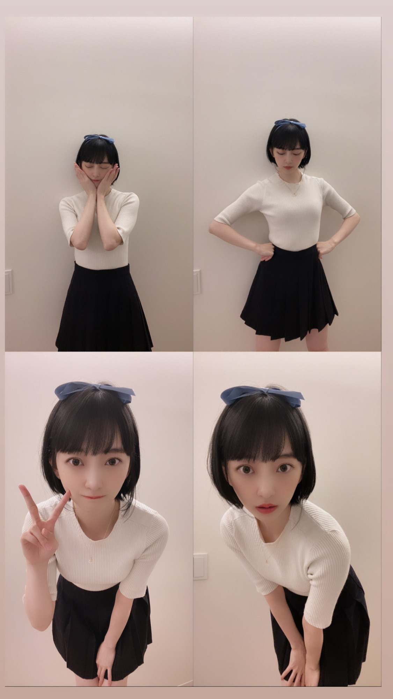
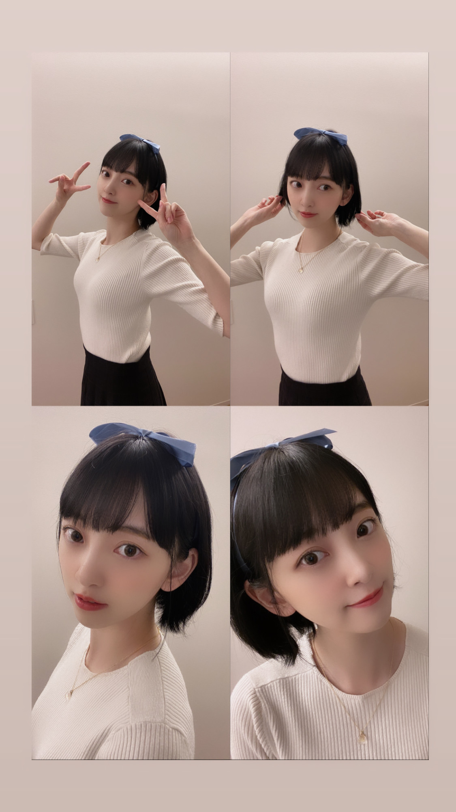
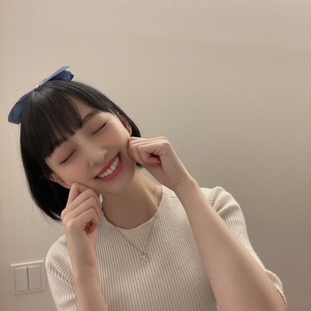

2020/0929Tueもう10月なので
どーも^ - ^
秋刀魚がどうしても食べたいんですけど
まだ食べれていないので
無事、食べれたら報告致します！！！
さて
先日募集させていただきました
" 未央奈にしてほしいハロウィンコスプレ "
たくさんのご意見ありがとうございました☺︎
見させていただきました〜
どれをしようか考えた結果、
再現しやすそう、リクエスト多数 なものを
優先してなるべくたくさんのコスプレを
できたらいいなと思っています^ - ^
二次元様には到底敵いませんが
温かい目で見守っていただけたら...
第一弾はお家にある服で再現できたので
この方から！
"彼女、お借りします"
の更科瑠夏ちゃん
リクエスト多かったー！
髪型かな？


好きな人にはグイグイタイプの瑠夏ちゃん
瑠夏ちゃんの可愛さには頭が上がりません...
どうか瑠夏ちゃんファンの皆さま
お許しください......m(_ _)m
さて
次はあのキャラクターをする予定です！
帽子がチャームポイントかな！
お楽しみに〜
10月たくさんリクエストコスプレ写真
あげる予定ですっ
そして10月3日の有吉反省会2時間spに
真夏さんと出させていただきます^ - ^
だいすきな姉と一緒で楽しめました！
緊張してすごいクールな感じになってしまたけど。笑
ぜひ見てください^ - ^

秋刀魚秋刀魚
2020/09/29 19:06
コメント(255)
未央奈ちゃん！
ブログ更新ありがとう!
めっちゃかわいいね！
応援してるよ☺️☺️
ブログ更新ありがとう!
めっちゃかわいいね！
応援してるよ☺️☺️
るかちゃんコス可愛くて最高です！
最近髪を切ったさくちゃんにもやらせてみてください笑
最近髪を切ったさくちゃんにもやらせてみてください笑
更新ありがとう
コスプレかわいいよ
次はアラレちゃんかな？
有吉反省会楽しみにしてます
コスプレかわいいよ
次はアラレちゃんかな？
有吉反省会楽しみにしてます
コスプレありがとう
キャラクターはわからないけど、未央奈ちゃんが可愛いからなんでも嬉しい
バラエティへの出演嬉しいです！！
観ますね！
れなちさんの帯のラジオ番組始まりますね
「無理せず、れなちさんらしく楽しんでください」とれなちさんに伝えてほしいです
未央奈ちゃん大好き
キャラクターはわからないけど、未央奈ちゃんが可愛いからなんでも嬉しい
バラエティへの出演嬉しいです！！
観ますね！
れなちさんの帯のラジオ番組始まりますね
「無理せず、れなちさんらしく楽しんでください」とれなちさんに伝えてほしいです
未央奈ちゃん大好き
可愛い。お似合いです！
キャラクターあんま分からないけど(笑)
また見たい。
キャラクターあんま分からないけど(笑)
また見たい。
元ネタはわからないけど、すごく可愛いです！
ブログお疲れ様です。
コスプレかわいいですね～
やはり「２期生最強」です！
有吉反省会楽しみにしてます。
コスプレかわいいですね～
やはり「２期生最強」です！
有吉反省会楽しみにしてます。
未央奈ちゃん更新ありがとう！
私もまだ秋刀魚食べれてないので
食べたら報告しますね。
コスプレめっちゃ可愛い！
見たことない漫画だったので調べてみたけど、
未央奈ちゃんそのものじゃないか！笑
とにかく、めっちゃ可愛いくて好きです！
次も楽しみにしてます！
秋刀魚秋刀魚
私もまだ秋刀魚食べれてないので
食べたら報告しますね。
コスプレめっちゃ可愛い！
見たことない漫画だったので調べてみたけど、
未央奈ちゃんそのものじゃないか！笑
とにかく、めっちゃ可愛いくて好きです！
次も楽しみにしてます！
秋刀魚秋刀魚
かわいい
2ヶ月前の14日にファンになりました
こんにちは‼︎
ブログ更新、ありがとうございます♪
自分も、今年はまだ秋刀魚を食べれていません。
なんか、今年は不漁みたいで、値段も高いですよね〜
でも、秋刀魚の塩焼きは大好物なので、去年の冷凍モノでもいいから食べたいなって思います…‼︎
せっかくだから、やっぱり秋を感じたいですよね♪
ちなみに、自分はあまり二次元が詳しくないので、残念ながら瑠夏ちゃんが分かりません(苦笑)。
でも、コスプレした未央奈が可愛いってことは分かります‼︎(笑)
頭のリボンがアクセントですね♪
服装もシンプルで、とっても可愛いです‼︎
次のコスプレは、帽子がアクセントのキャラクターなんですね。
…スナフキン？(笑)
二次元が疎くて申し訳ありません(苦笑)。
さて、今日はテレ東音楽祭ですね‼︎
楽しみにしてます♪
ではでは、また。
今日も未央奈にとっていい1日になりますように♪
ブログ更新、ありがとうございます♪
自分も、今年はまだ秋刀魚を食べれていません。
なんか、今年は不漁みたいで、値段も高いですよね〜
でも、秋刀魚の塩焼きは大好物なので、去年の冷凍モノでもいいから食べたいなって思います…‼︎
せっかくだから、やっぱり秋を感じたいですよね♪
ちなみに、自分はあまり二次元が詳しくないので、残念ながら瑠夏ちゃんが分かりません(苦笑)。
でも、コスプレした未央奈が可愛いってことは分かります‼︎(笑)
頭のリボンがアクセントですね♪
服装もシンプルで、とっても可愛いです‼︎
次のコスプレは、帽子がアクセントのキャラクターなんですね。
…スナフキン？(笑)
二次元が疎くて申し訳ありません(苦笑)。
さて、今日はテレ東音楽祭ですね‼︎
楽しみにしてます♪
ではでは、また。
今日も未央奈にとっていい1日になりますように♪
かわいすぎる
これからのコスプレ期待してますよ～(●´ω`●)
いつもありがとう。( 〃▽〃)堀ちゃんのおかげで日々楽しんで過ごせておりやす❗
がんばり屋さんだから体調に気をつけて、大好きな秋を満喫できますように健康にお過ごし下さい(^3^)/
尊敬する有吉さんと大好きな堀ちゃんがからむなんて夢のような番組をありがとうです❗❗楽しみ！！
がんばり屋さんだから体調に気をつけて、大好きな秋を満喫できますように健康にお過ごし下さい(^3^)/
尊敬する有吉さんと大好きな堀ちゃんがからむなんて夢のような番組をありがとうです❗❗楽しみ！！
未央奈～～～～～～～。秋刀魚既に食べました。やったぁ。
未央奈ちゃん、ブログ更新ありがとう！もう１０月 長袖 準備しました。食欲の秋です。さんまの塩焼き、大根おろし添えて食べると、美味しいです。今年は秋刀魚高いので、冷凍の秋刀魚で、我慢します。
みおなブログ更新ありがとう。
ハロウィンコスプレ第1弾見せてくれてありがとう。
みおなによく似合っていて最高でした！次のも楽しみに待ってます。
あと、有吉反省会でみおなが何を反省するのか、すごく気になるので観まーす。
ハロウィンコスプレ第1弾見せてくれてありがとう。
みおなによく似合っていて最高でした！次のも楽しみに待ってます。
あと、有吉反省会でみおなが何を反省するのか、すごく気になるので観まーす。
ブログ更新ありがとう！
みおなかわいい
みおなかわいい
未央奈ちゃん更新ありがとう
もう明日から10月なのですね～
本当に早くてびっくり(´；ω；`)
コスプレとても可愛いです♪
ボブが好きなので、
めちゃくちゃタイプです笑笑
リボンも似合うなぁ(*^^*)
テレビ出演も楽しみにしてます☆
もう明日から10月なのですね～
本当に早くてびっくり(´；ω；`)
コスプレとても可愛いです♪
ボブが好きなので、
めちゃくちゃタイプです笑笑
リボンも似合うなぁ(*^^*)
テレビ出演も楽しみにしてます☆
コメント遅れたごめん！！！！
未央奈ちゃんのコスプレが可愛すぎてちょっと死んじゃいそうです！次は何やるか楽しみです！
ヾ('ω'⊂ )))Σ≡ﾊﾟｼｭ-ﾝ
未央奈ちゃんのコスプレが可愛すぎてちょっと死んじゃいそうです！次は何やるか楽しみです！
ヾ('ω'⊂ )))Σ≡ﾊﾟｼｭ-ﾝ
それでは聞いてください乃木坂46で「♪秋刀魚」
可愛すぎるど！！！
お風呂 ♨️で明太子フランスはアカーーーーン！・・・(´Д｀)
みおなちゃん更新ありがとう╰(*´︶`*)╯♡
秋刀魚食べれたら良きですね(*´꒳`*)
コスプレ、写真もありがとう！
めっちゃ可愛いです（╹◡╹）♡
握手会もない状況でこういった企画を考えて実行してくれてありがとう
有吉反省会に真夏さんと出演したんだねー
楽しみにしてます(๑>◡<๑)
秋刀魚食べれたら良きですね(*´꒳`*)
コスプレ、写真もありがとう！
めっちゃ可愛いです（╹◡╹）♡
握手会もない状況でこういった企画を考えて実行してくれてありがとう
有吉反省会に真夏さんと出演したんだねー
楽しみにしてます(๑>◡<๑)
写真見た瞬間、アワワッ！って思わず声上げてしまった。なんだかんだ言って好きなだけ可愛く描いてるんですから二次元は。いくらミオナでもと思ってたのに、かる〜く超えてきたね。さすがです、ミオナのご両親。ではは
未央奈ブログ更新ありがとう☆（ゝω・）v
コスプレめちゃくちゃ可愛い次回が楽しみだなぁ
秋刀魚食べたいよね〜
コスプレめちゃくちゃ可愛い次回が楽しみだなぁ
秋刀魚食べたいよね〜
いや～かわいいですなぁ～
コスプレ超最高です。
有吉反省会も楽しみ～＼(^o^)／
コスプレ超最高です。
有吉反省会も楽しみ～＼(^o^)／
未央奈〜
応援しとるよー
ガンバやで^ - ^
応援しとるよー
ガンバやで^ - ^
ブログ更新お疲れ様～
最後の写真めっっっちゃかわいい～～
有吉反省会2時間sp見るね！クールな未央奈かー楽しみ～～(о´∀`о)
最後の写真めっっっちゃかわいい～～
有吉反省会2時間sp見るね！クールな未央奈かー楽しみ～～(о´∀`о)
めちゃめちゃ可愛い！コスプレも最後の写真もすき！
有吉反省会2時間spに見ます！真夏さんのこと、だいすきな姉と一緒で楽しめました！って言ってくれて嬉しい。まなったんと未央奈ちゃんはお互い突っ込みあえる良いコンビだよね。今後ともお姉ちゃんのことよろしくお願いいたします。
みおなちゃんマジでかわいい！
瑠夏ちゃんほんとにマッチしとるし実際おったらこんな感じなんかなぁってなりました！次のコスプレも楽しみにしとるねー！
瑠夏ちゃんほんとにマッチしとるし実際おったらこんな感じなんかなぁってなりました！次のコスプレも楽しみにしとるねー！
堀ちゃん、大好きだよー
元ネタは知らないんですが、可愛いコスプレですね！
有吉反省会、未央奈ちゃんが反省するのかな？
それともまなったんかな？
楽しみにしています♪☆
有吉反省会、未央奈ちゃんが反省するのかな？
それともまなったんかな？
楽しみにしています♪☆
みおなちゃんのコスプレめっちゃ可愛い！！
これからもコスプレしてほしいです！！
これからもコスプレしてほしいです！！
秋刀魚食べたいけど高いというか不漁やね(^-^;
是非美味しいの食べてね～(*^^*)
是非美味しいの食べてね～(*^^*)
更科瑠夏ちゃんかわいい！
元ネタを知らないけどかわいいのはわかるー
ポーズも意識してるのかな！
いつものみおなと違う感じなのもいいね
次も楽しみにしてます！
元ネタを知らないけどかわいいのはわかるー
ポーズも意識してるのかな！
いつものみおなと違う感じなのもいいね
次も楽しみにしてます！
ぐいぐい来られたら
照れちゃうなぁまじで照
それわかる笑
照れちゃうなぁまじで照
それわかる笑
堀さん、こんばんは。
あと三十分足らずで十月がやってきます。十月といえばハロウィーン。ハロウィーンといえば仮装。というわけで、堀さんのハロウィーンコスプレの第一弾がお披露目されました〜。
僕はアニメ漫画に詳しくないものですから、扮するキャラクターの名前を見てもすぐにはピンとこないのです。その代わり、画像検索をして「わ、似てる〜」と感心する楽しみがあります（笑）。今回の瑠夏ちゃん、雰囲気がよく似ていていいですね。
次回も楽しみに待っています。
秋の味覚、秋刀魚を僕もまだ今年は食していない気がする。脂の乗った焼いた秋刀魚にすだちをしぼって、大根おろしといただく。秋のぜいたくですね。早く食べたい！
ではまたコメント寄せます。おやすみおな。
さらばだ、また会おう！（気球に乗って去りぬ〜）
あと三十分足らずで十月がやってきます。十月といえばハロウィーン。ハロウィーンといえば仮装。というわけで、堀さんのハロウィーンコスプレの第一弾がお披露目されました〜。
僕はアニメ漫画に詳しくないものですから、扮するキャラクターの名前を見てもすぐにはピンとこないのです。その代わり、画像検索をして「わ、似てる〜」と感心する楽しみがあります（笑）。今回の瑠夏ちゃん、雰囲気がよく似ていていいですね。
次回も楽しみに待っています。
秋の味覚、秋刀魚を僕もまだ今年は食していない気がする。脂の乗った焼いた秋刀魚にすだちをしぼって、大根おろしといただく。秋のぜいたくですね。早く食べたい！
ではまたコメント寄せます。おやすみおな。
さらばだ、また会おう！（気球に乗って去りぬ〜）
いいね！！
次も楽しみ！
次も楽しみ！
ざわざわざわざわざわざわ……？！
ザワザワザワザワザワザワ…………？！
ザワザワザワザワザワザワ…………？！
こんばんは！！
未央奈めっちゃ似合ってる！！
次のコスプレが楽しみすぎる！！
未央奈めっちゃ似合ってる！！
次のコスプレが楽しみすぎる！！
未央奈ブログ更新ありがとう！
コメント遅れてゴメン
インスタ毎日確認してるよ！
コスプレありがとう！
未央奈なら二次元にも負けないね！
これからも応援してるよ！
体調には気をつけてね！
by未央奈推しのブラックコーヒー
コメント遅れてゴメン
インスタ毎日確認してるよ！
コスプレありがとう！
未央奈なら二次元にも負けないね！
これからも応援してるよ！
体調には気をつけてね！
by未央奈推しのブラックコーヒー
堀ちゃん、超絶かわいいねー
瑠夏ちゃんが1番好きなので、とても嬉しい！
似合いすぎ！！というか、可愛すぎます！！
未央奈ありがとう
似合いすぎ！！というか、可愛すぎます！！
未央奈ありがとう
ブログ更新ありがとう
質問 なんて呼ばれるのが一番いい？
質問 なんて呼ばれるのが一番いい？
未央奈ちゃんありがとうございます‼かなりありがとうございます‼頑張ります‼気をつけて下さい。ありがとうございます！
モデル知らないけどスゴく可愛い。
未央奈ー！！


ごめん、昨日何かめためたに眠くてコメントしようと思ったら気づいたら寝てしまってましたよごめんねー(・＿・;
秋が大好きな未央奈は食べないとねっ。秋刀魚食べた報告まってるねーw
未央奈ママさんにお願い出来ないのかな？(^^)
コスプレありがとー！めっちゃ可愛い！
10月から始めてくれるのかな？って思ってたらもう第一、第二弾としてくれたから嬉しいよ！(゜▽゜*)
冴えカノの恵ちゃんもすごい良いね！チャームポイントの帽子を着こなすのはさすがだね♪
あきくんになってこの恵ちゃんとゲーム作りたいです。でもギャルゲーじゃなくてホラーゲームかな？w
有吉反省会出るんだね！告知ありがとう観るよ！
まなったん大好きな姉なんて言われたら喜ぶだろうね！
未央奈のこと昨日のぎおびで年下なのにすごいお世話をしてくれるって褒めてたよ～(まゆ毛の美容液についても話してたw)
あとさぁちゃんもブログで未央奈とのこと書いてたね！
家においでって言ってもらえてほんと嬉しかったんだねー、なかなか世の中大変だけどちゃんと実現しますように( ・∇・)
ははは、秋刀魚秋刀魚って可愛いわー♪
さかなさかな～の歌みたいになってるw
(おさかな天国)
今日はテレ東音楽祭だね！
かなりんセンターでのおいしゃんはほんと楽しみ！
確かにいろんな曲を披露してほしいなー！短めのメドレーとかでも(^-^)/
分かる！たまーに甘いものやたら食べたくなるよね！
ちょっと疲れて糖分欲してるとかもあるのかな？
辛いのも良いね、でも辛さ通り越して痛いやつは嫌だな～w(^-^;)
肩凝り大丈夫？俺も右肩が凝ってる。
実は脇のまわりをマッサージするとほぐれて良くなったりするよー。
神経が繋がってるんだって前に行きつけの接骨院の先生に教わったんよ(*￣∇￣*)
今日で9月も終わりだねーはやいなぁ。
段々と夜~明け方寒くなってきたから体調気をつけてね。
でははー☆